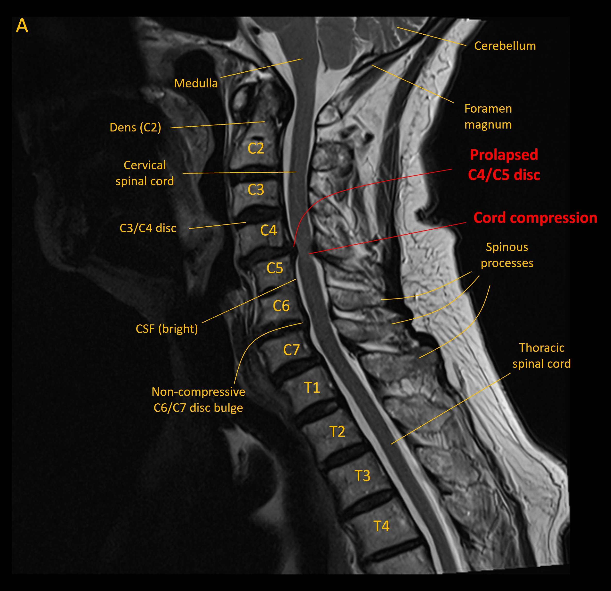
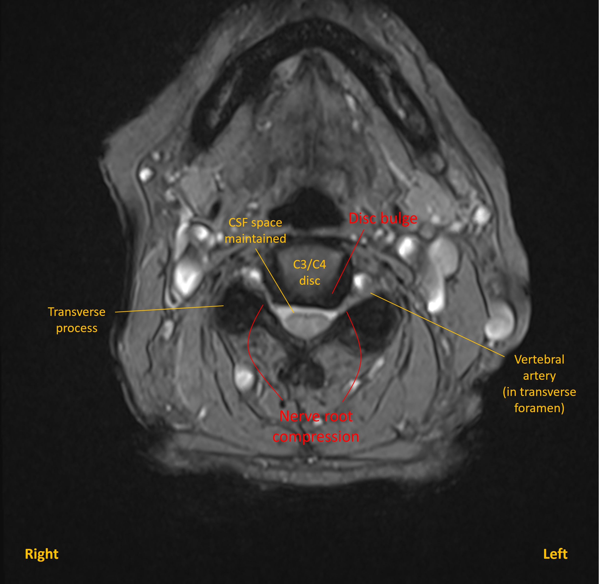
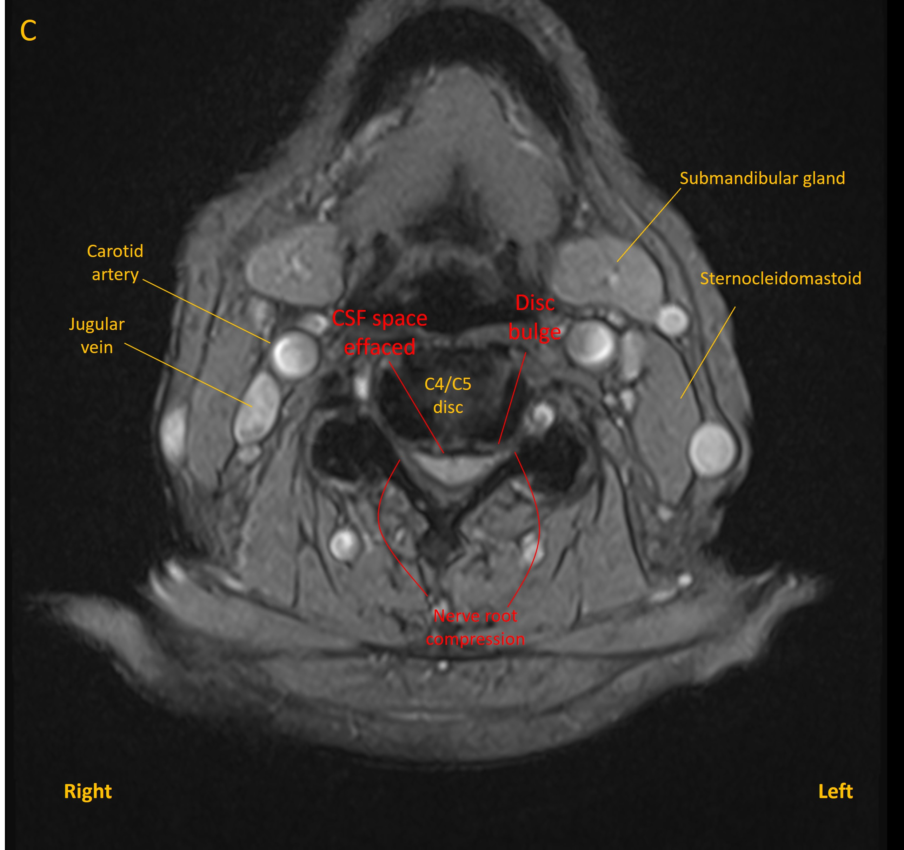
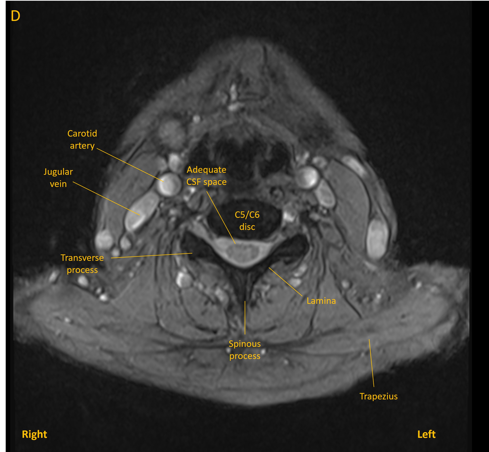

Case 13 - numb hands and stiff legs
Outcome
Urgent MRI spine demonstrated a C4/C5 disc prolapse compressing the spinal cord from in front (image A - sagittal view).

Degenerative changes were seen at multiple levels in the cervical spine, as is frequent at this age, and with some levels featuring mild narrowing of exit foramina and contact with nerve roots. These were evident at levels C3/C4 (B), C4/C5 (C) and C5/C6(D) - although none of these were clinically evident. Disc bulges at other levels did not compress the cord.



The patient was admitted to the neurosurgical unit and underwent posterior decompression surgery, with removal of the spinous process and bilateral laminectomy. In the immediate 24 hours post-operatively she felt some improvement in the numbness and walking, though still had minor weakness in her hands. The Hoffman signs disappeared, but bilateral ankle clonus persisted.
3 months after surgery the patient felt improvement though still had some residual spasticity in the legs. It had been explained to her that the operation would not likely reverse the existing damage, but was to prevent progression - and certainly she was no worse.
Final diagnosisCompressive cervical myelopathy at C4/C5 due to a central disc prolapse, with improvement after posterior decompression.
Key points